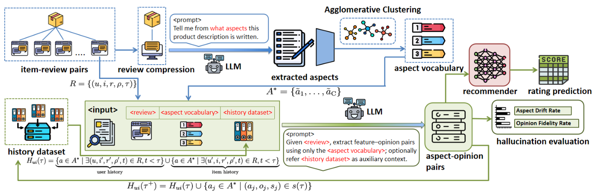

HADSF: Aspect Aware Semantic Control for Explainable Recommendation (面向可解释推荐的方面感知语义控制框架)
- 会议/期刊: WSDM 2026
- 作者与机构: Zheng Nie (NUS), Peijie Sun (南京邮电大学)
- 推荐链路定位: 召回（评论语义表征增强，可插拔至评分预测器）
- 研究方向: 大语言模型推荐 / 去偏与可信
- 论文原文: 论文原文链接
- 开源代码: 开源代码仓库链接
TL;DR (1分钟核心速览)
针对 LLM 从自由评论文本抽取方面-观点时缺乏范围控制（冗余、低频噪声、语义重叠标签）与幻觉无法量化两大痛点，HADSF 提出两阶段框架：Stage I 用多采样共识+嵌入聚类归纳紧凑的语料级方面词表 \(A^*\)，Stage II 以 \(A^*\) 为显式约束、结合用户-物品历史先验做受控三元组抽取；并首次提出 ADR/OFR 两个幻觉度量，揭示幻觉与评分预测误差的非单调关系。在约 300 万条评论、1.5B–70B 模型上，TGNN-aspect 在三个数据集 MSE 全面最优（如 Musical 1.0960 vs. TGNN 1.1289），且 8B 级小模型即可媲美 70B。
Background & Motivation (背景与核心矛盾)
- 主流范式: 评论驱动推荐从主题模型（CTR/TIM）→ 神经注意力（NARRE/DAML）→ LLM 抽取结构化偏好表征（EXP3RT/Rec-SAVER），后者语义对齐更强但抽取过程完全自由。
- 前人局限: ① 无范围控制地挖掘自由文本，同一问题被拆成大量语义重叠的碎片化标签，低频属性沦为统计噪声；② 幻觉评估仅停留在"生成列表里数编造物品"，无法刻画幻觉如何传导为下游推荐误差；③ 模型规模与幻觉、推荐质量之间的成本-质量权衡完全空白。
- 核心洞察 (Key Insight): 作者用互信息-泛化界论证——受控表征 \(z_{ctrl}\) 满足 \(I(z_{ctrl};X)\le I(z_{free};X)\) 且 \(\dim(z_{ctrl})=K\ll\dim(z_{free})\)，测试风险 \(\mathbb{E}_{test}\lesssim \mathbb{E}_{train}+\mathcal{O}(\sqrt{\text{Comp}(z)/n})\)，故先建立紧凑、任务对齐的方面空间再学推荐可收紧泛化项；同时实证发现幻觉并非越低越好。
- 本文切入点: 用"语料级方面词表"作为语义控制旋钮，把无约束生成转为受控抽取，并配套可解释幻觉度量做诊断。
Method (核心方法设计)
1. 整体框架 (Overall Architecture)
HADSF 分两阶段闭环：Stage I 对全语料做 \(K\) 次独立子采样，每次先让 LLM 压缩长评论为高密度摘要、再抽取方面词，随后用句向量凝聚聚类合并同义项（"ambiance/atmosphere/environment"），按频率归一化相似度选出簇代表，得到紧凑词表 \(A^*\)；Stage II 按时间戳顺序遍历交互，用 \(A^*\) 全局引导 + 用户/物品历史方面记忆 \(H_{ui}(\tau)\) 构造个性化提示，抽取 (方面, 观点, 情感) 三元组并回写更新记忆。抽取结果作为结构化特征注入 EFM/ANR/TGNN 等评分预测器。
flowchart TD
A["原始评论语料 D"] --> B["多采样共识: K次子采样→压缩→抽方面"]
B --> C["嵌入聚类归一化 → 紧凑词表 A*"]
C --> D["按时间序构造个性化提示 P_global[A*]+P_personal[H_ui(τ)]+P_extract[r]"]
D --> E["受控抽取三元组 (a,o,s)"]
E --> F["更新用户-物品方面记忆 H_ui"]
E --> G["注入 EFM/ANR/TGNN 评分预测"]
2. 关键设计拆解 (Key Designs)
-
多采样共识 + 频率归一化聚类代表选择：单次 LLM 抽取方差大、同义方面泛滥。对 \(K\) 次子采样结果取并集后做凝聚聚类，簇代表按 $\(\tilde{a}_c=\arg\max_{a'\in C_c}\sum_{a''\in C_c}\frac{\text{freq}(a'')}{\sum_{x\in C_c}\text{freq}(x)}\,\hat{\phi}(a')^\top\hat{\phi}(a'')\)$ 选取——即"既高频又与簇内成员语义最居中"的词。直觉：把长尾同义噪声压成 \(K\) 个高信息量锚点，直接降低 \(I(z;X)\) 与维度，从而收紧泛化界（图 3 显示聚类后方面相似度热图明显更独立）。
-
时间序动态个性化抽取：静态词表无法刻画兴趣漂移。维护 \(H_{ui}(\tau)=\{a\in A^*\mid \exists(u,i',\cdot,\cdot,t),t<\tau\}\cup\{a\in A^*\mid\exists(u',i,\cdot,\cdot,t),t<\tau\}\)，即"用户历史关注方面 ∪ 物品被他人强调的方面"，拼入提示 \(P_{dynamic}=[P_{global}[A^*];P_{personal}[H_{ui}(\tau)];P_{extract}[r]]\)，抽取后 \(H_{ui}(\tau^+)=H_{ui}(\tau)\cup\{a_j\}\)。直觉：把协同信号以"方面先验"形式注入 LLM，使抽取既受全局约束又随个体演化。
-
幻觉度量 ADR/OFR 与训练/推理开销：ADR 统计抽取方面落在 \(A^*\) 外的比例 \(\text{ADR}=\frac{1}{|S|}\sum\frac{|\{a\notin A^*\}|}{|s|}\)；OFR 用跨度级最大余弦相似度 \(\text{SemSim}(o,r)=\max_{r_{s:e}\in\mathcal{S}_{L,\Delta}(r)}\frac{\langle\psi(o),\psi(r_{s:e})\rangle}{\|\psi(o)\|\|\psi(r_{s:e})\|}\) 衡量观点是否有原文依据（\(\Delta=2\) 容差）。框架本身无训练损失（纯抽取管线），下游沿用各 backbone 原损失；抽取为离线一次性成本，在线仅需查表注入特征，无额外推理延迟。
Experimental Setup & Evaluation Protocol (实验设置与评估协议)
- 数据集与预处理: Amazon 两域保留 2021 年后交互 >25 条的用户/物品；Yelp 取 2019 年后餐厅类、交互 >10 条。
| 数据集 | #Users | #Items | #Reviews | 密度 | 场景说明 |
|---|---|---|---|---|---|
| Musical Instruments | 320,689 | 15,273 | 402,326 | 0.183% | 乐器，短评论为主（均长 42.5） |
| Industrial & Scientific | 884,066 | 25,576 | 1,043,019 | 0.078% | 工业品，均长 34.8 |
| Yelp | 599,070 | 44,904 | 1,481,005 | 0.075% | 餐厅，长评论（均长 90.0） |
- 数据划分与防穿越: 按时间戳排序处理交互，历史记忆 \(H_{ui}(\tau)\) 严格只使用 \(t<\tau\) 的交互，属全局时间戳切分式防穿越。
- 排名评测协议: 本文任务为评分预测而非排序，采用 MSE / MAE 回归误差，非 Full-Ranking 或 Sampled Ranking。
- 对比基线与超参: 三类基线——传统 CF（PMF/EFM）、评论感知神经模型（ANR/NARRE/DeepCoNN/RGCL/TGNN）、LLM-as-Recommender（GPT-4o/Rec-SAVER/EXP3RT）。抽取用 LLaMA3.3-70B（20% 采样、重复 5 次），细粒度抽取用 LLaMA3.1-8B；LLM 基线用 QLoRA 微调 LLaMA3-8B；5 个随机种子取均值，\(p<0.05\) 显著性检验。
Key Experimental Results (实验关键数据)
1. 主实验对比 (Main Results)
| Method | Musical MSE | Musical MAE | Industrial MSE | Industrial MAE | Yelp MSE | Yelp MAE |
|---|---|---|---|---|---|---|
| PMF | 2.3767 | 1.2675 | 2.6328 | 1.3831 | 2.6720 | 1.4176 |
| EFM | 1.4842 | 0.7955 | 1.7130 | 0.8592 | 1.8686 | 0.9950 |
| ANR | 1.2960 | 0.8150 | 1.5186 | 0.8735 | 1.4108 | 0.9294 |
| NARRE | 1.3908 | 0.8257 | 1.6726 | 0.9379 | 1.5279 | 0.9655 |
| RGCL | 1.1557 | 0.7096 | 1.3373 | 0.7597 | 1.3537 | 0.8738 |
| TGNN | 1.1289 | 0.7449 | 1.3050 | 0.8368 | 1.3470 | 0.8996 |
| GPT-4o | 1.5324 | 0.8541 | 1.6892 | 0.9023 | 1.7287 | 0.9576 |
| EXP3RT | 1.3791 | 0.7645 | 1.5557 | 0.8373 | 1.6469 | 0.9262 |
| EFM-aspect | 1.3637 | 0.7669 | 1.5741 | 0.8342 | 1.8275 | 0.9858 |
| ANR-aspect | 1.2348 | 0.7953 | 1.4825 | 0.8546 | 1.3958 | 0.9271 |
| TGNN-aspect | 1.0960 | 0.7421 | 1.2822 | 0.8314 | 1.3402 | 0.8963 |
| Improv. (vs TGNN) | ↓2.9% | ↓0.4% | ↓1.7% | ↓0.6% | ↓0.5% | ↓0.4% |
2. 消融实验 (Ablation Study)
| 配置 | 说明 | 趋势（三 backbone × 三数据集） |
|---|---|---|
| No Aspect | 原始 LLM 抽取，无词表 | 误差最高，冗余噪声主导 |
| Aspect Only | 有词表，无聚类 | 显著下降，约束生成有效 |
| Cluster Only | 有聚类，无动态历史 | 进一步下降，语义归一化增益 |
| Full Steps | 全组件 | 最优，个性化提供互补增益 |
3. 关键实验发现 (Key Findings)
- 架构无关的稳定增益，且弱 backbone 收益更大：EFM-aspect 相对 EFM 在 Musical 上 MSE 从 1.4842 降至 1.3637（↓8.1%），而强 backbone TGNN 仅 ↓2.9%，说明结构化方面注入本质是"正则化表征学习"，对弱模型补益更明显；TGNN-aspect 全面超越 GPT-4o/EXP3RT 等 LLM 直接推荐器。
- 幻觉-性能呈非单调关系：Qwen2.5-32B 的 ADR 极低（Musical 0.0073、Yelp 0.0042）但 MSE 并非最优；LLaMA3.1-8B 的 ADR 反而最高（0.1153）却在 ANR/TGNN 上取得最佳或次佳 MSE——适度"抽象/改写"扩大方面覆盖有益，过度保守抑制语义多样性反而有害。
- 规模不保证质量，CoT 蒸馏反成噪声：70B/32B 并不稳定优于 8B/14B 中型模型；DeepSeek-R1 蒸馏版（8B/14B）在所有非蒸馏变体面前全面落后，多步 CoT 为语义抽取注入冗余复杂度。此外仅用 20% 评论抽取即可达 CER≈1（Top-20 方面重叠 90%），大幅降低抽取成本。
Highlights, Limitations & Rating (亮点、对比与审稿评价)
- 与代表作对比 (vs. Prior Work): 相较 EXP3RT/Rec-SAVER 的"自由抽取+CoT 推理"，HADSF 的核心差异是先建词表再受控抽取，把开放生成转为闭集约束；相较 NARRE/TGNN 的注意力/主题图，本文用 LLM 语义锚点替代启发式主题，且首次给出幻觉与下游误差的定量关联。
- 可迁移亮点: ① "多采样共识 + 频率归一化聚类代表"可作为任何 LLM 标签体系归纳的通用去噪配方；② ADR/OFR 的跨度级 grounding 度量可直接迁移到 LLM 生成式推荐/解释生成的忠实性评估。
- 审稿级局限批判: ① 幻觉度量依赖句向量相似度与 \(\Delta\) 容差，对长观点与领域术语敏感，且 ADR 以 \(A^*\) 为真值基准，词表本身偏差会被继承；② 抽取为离线管线，词表需按域重建，跨域冷启动与在线增量更新成本未评估；③ 主实验仅覆盖评分预测，缺少排序/Top-N 与真实 A/B 验证。
- 四维评分: 创新性 ⭐⭐⭐⭐ | 实验扎实度 ⭐⭐⭐⭐ | 方法清晰度 ⭐⭐⭐⭐⭐ | 落地价值 ⭐⭐⭐⭐